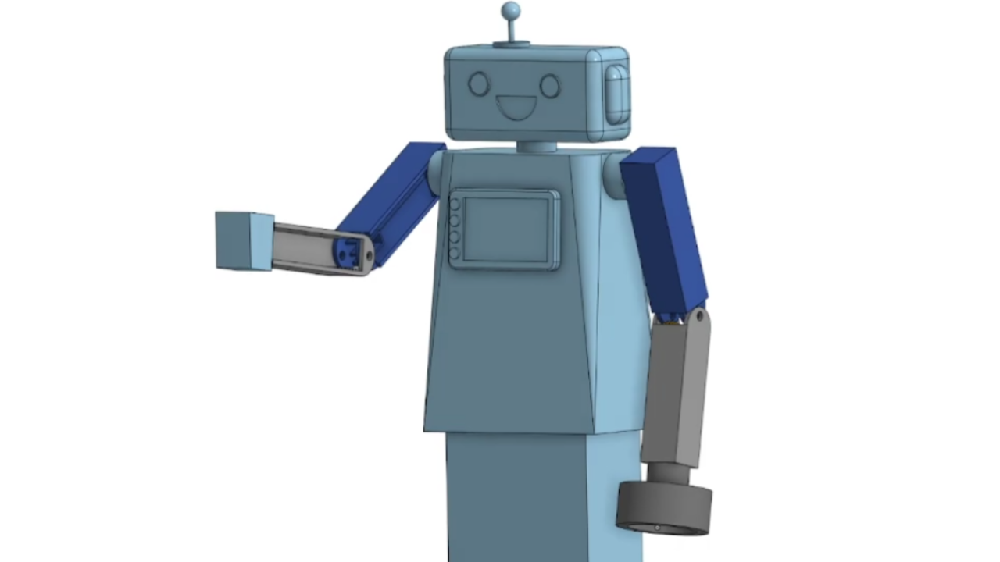
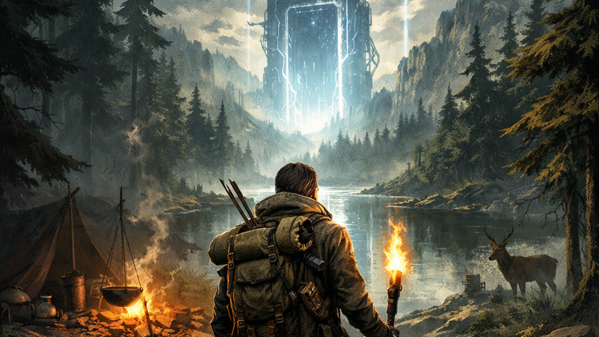
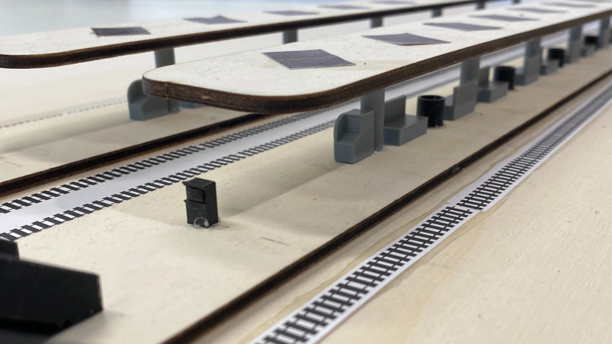
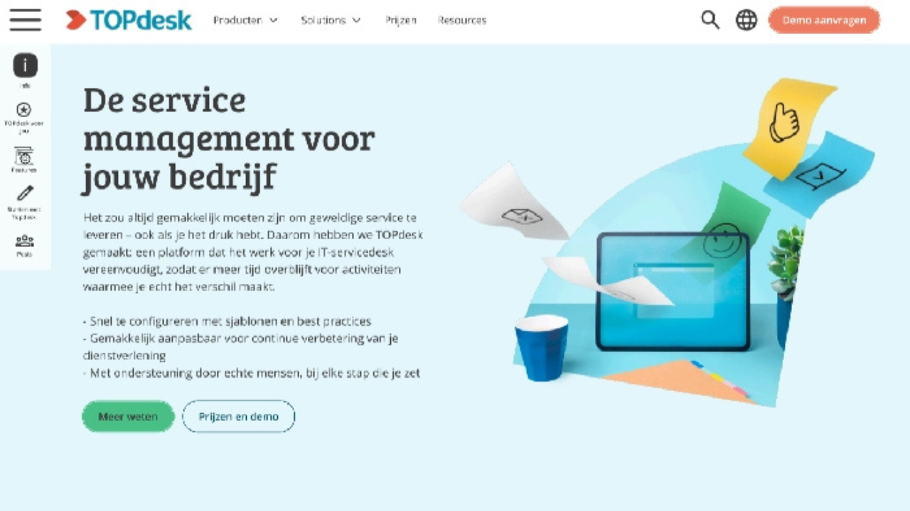

Mijn Projecten
Een selectie van mijn recente werk en projecten

Solo Unity Game
Mijn aller eerste game in Unity voor een Informatica project in VWO 6
Unity
C#
Model Design
Animation

Meesterproef
Een robot ontwerp voor TU Delft Robotica in VWO 6 tijdens mijn meesterproef
Online Design
Onshape
Robot
Teamwork

Duo Unity Game
Mijn tweede game in Unity voor informatica in VWO 6 met een teamgenoot
Unity
C#
AI

Station Ontwerp
Een station ontwerp voor RijswijkBuiten in opdracht van ProRail
Design
Lasersnijden
RijswijkBuiten
ProRail

Website Design
Een nieuwe design voor de website van TOPdesk in opdracht van het bedrijf
Website Design
Figma
TOPdesk